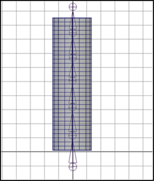
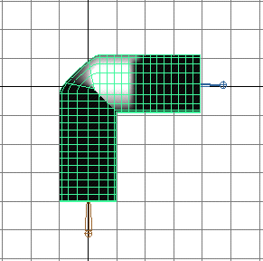

此示例类似于使用平滑蒙皮方式蒙皮圆柱体，便于将刚性蒙皮与平滑蒙皮进行比较。
使用刚性蒙皮方式蒙皮圆柱体
创建圆柱体
- 使用下列选项创建 NURBS 圆柱体：
- 高度(Height)：8
- 分段数(Sections)：16
- 跨度数(Spans)：32

为圆柱体创建骨架
- 为圆柱体构建骨架。使骨架由一个包括七个关节的单关节链构成。 
该骨架由一个关节链组成（joint1 到 joint7）。joint4 大约位于圆柱体的中心位置。
通过刚性蒙皮绑定
- 选择骨架的根关节（默认名称：joint1）。
- 在命令行中，输入 RigidBindSkin。
演练骨架
- 选择大约位于圆柱体中心的关节（例如，joint4），然后旋转大约 90 度。
刚性蒙皮提供了围绕旋转关节的清晰变形效果。可以使用“绘制簇权重工具”(Paint Cluster Weights Tool)来调整变形效果。
绘制折痕效果
- 选择平滑着色处理显示模式（热键：按 5 键）。
- 选择圆柱体。
- 选择“变形 > (绘制权重)簇”(Deform > (Paint Weights) Cluster) >
 。
。 - 在“工具设置”(Tool Settings)窗口中，应该会显示“paintWeights”框。
- 注意簇框。
- 单击刚性蒙皮点集。例如，joint3Set1。

- 在“簇”(Clusters)框中，单击其他刚性蒙皮点集。例如，单击“joint4Set1”。 
- 检查其他刚性蒙皮点集。例如，检查 joint2Set1。

- 使用“绘制簇权重工具”(Paint Cluster Weights Tool)的笔刷平滑变形效果。

若要进一步平滑和变形刚性蒙皮，请使用屈肌。有关详细信息，请参见创建所有类型的屈肌。